Katalog
Pogledajte modele prozora i vrata iz kataloga, kao i vrste komarnika i zavesa. Kliknite na sliku modela da otvorite veći prikaz.
Prozori i balkonska vrata · Ulazna vrata · Sobna vrata · Garažna vrata · Komarnici · Rolo i trakaste zavese · Profili i boje
Prozori i balkonska vrata
 Dvokrilni prozor sa spoljnom roletnom
Dvokrilni prozor sa spoljnom roletnom
 Prozor sa roletnom i nadgradnom kutijom
Prozor sa roletnom i nadgradnom kutijom
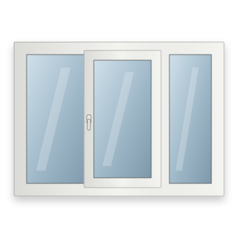
Klizni prozor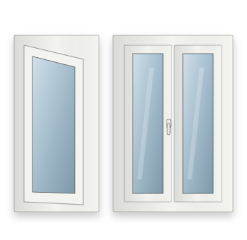
Jednokrilni prozori, otvaranje na kip i krilo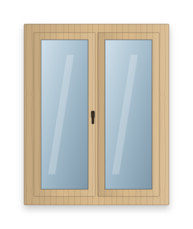
Dvokrilni prozor, svetli dekor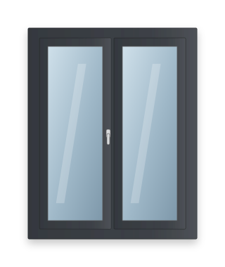
Dvokrilni prozor, antracit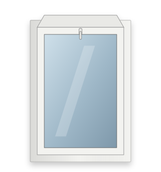
Prozor otvoren na kip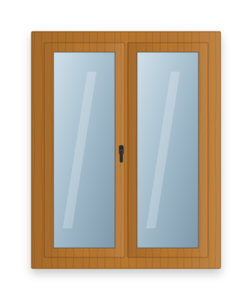
Dvokrilni prozor, dekor drveta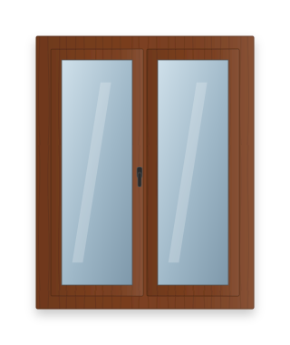
Dvokrilni prozor, tamni dekor drveta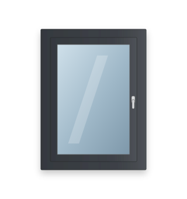
Jednokrilni prozor, antracitUlazna vrata
 Bela ulazna vrata sa horizontalnim linijama
Bela ulazna vrata sa horizontalnim linijama
 Bela ulazna vrata sa bočnim krilom i staklima
Bela ulazna vrata sa bočnim krilom i staklima
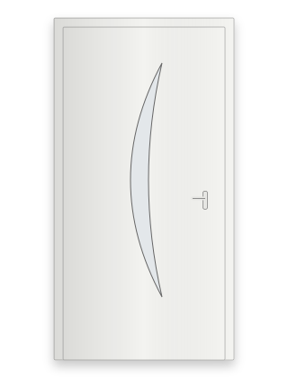
Bela ulazna vrata sa lučnim staklom Antracit vrata sa staklenim umetcima
Antracit vrata sa staklenim umetcima
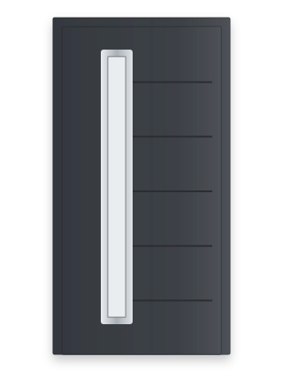
Antracit vrata sa uskim staklom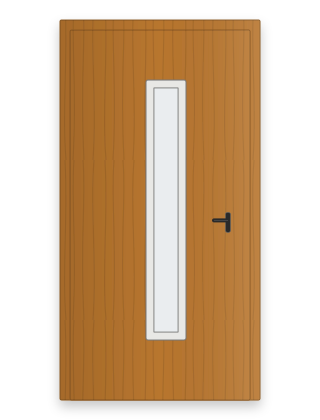
Vrata u dekoru drveta sa uskim staklom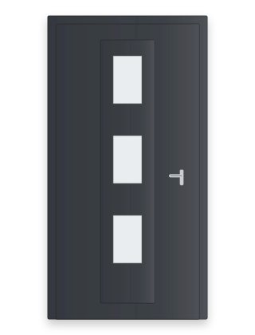
Antracit vrata sa tri stakla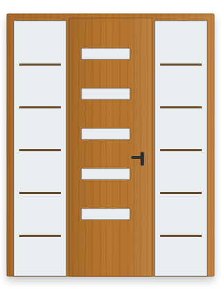
Vrata u dekoru drveta sa bočnim staklima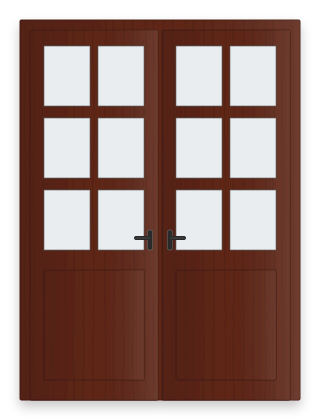
Dvokrilna vrata sa šprosnama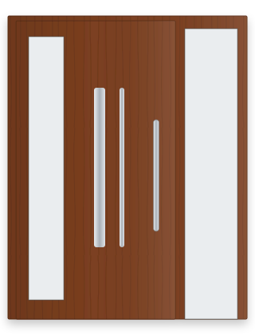
Vrata sa bočnim staklom, tamni dekor drvetaALU i INOX ulazna vrata
Aluminijumska ulazna vrata sa dekorativnim panelima. Panel je od aluminijumskog lima, sa staklom, inox lajsnama ili aplikacijama po izboru. Svaki model radimo u boji koju izaberete. Panele za ova vrata nabavljamo od proizvođača Avramović Paneli.
Vrata sa skrivenim krilom
Štok i krilo su u ravni sa zidom, bez vidljivih ramova i lajsni. Dobar izbor za moderne kuće i poslovne prostore.
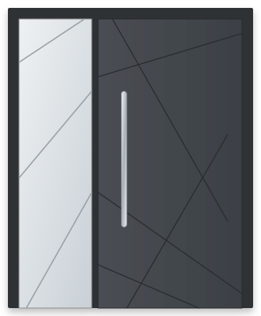
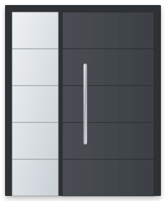
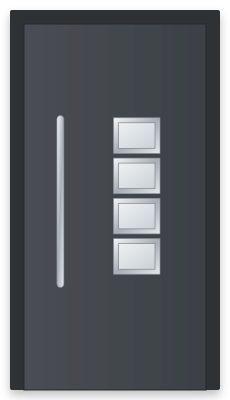
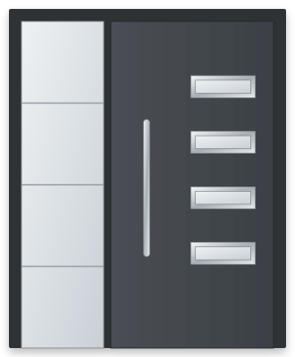
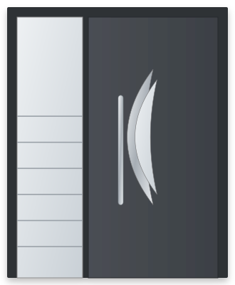
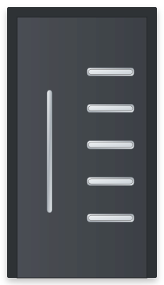
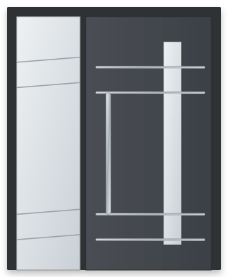
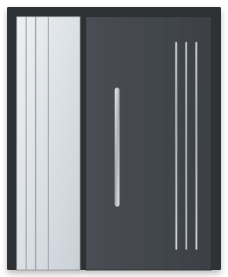
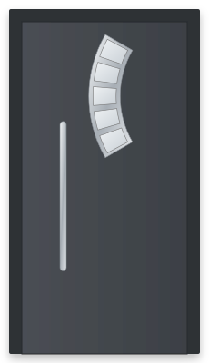
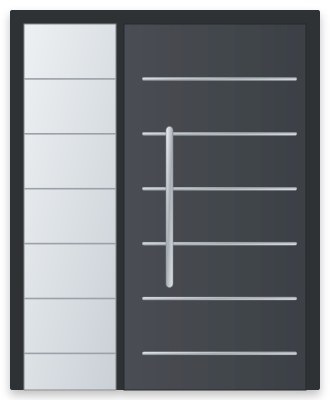
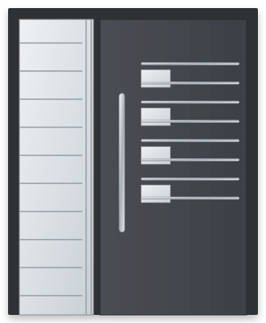
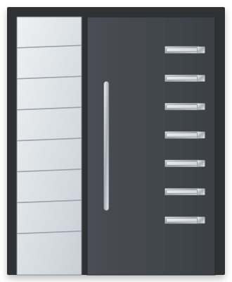
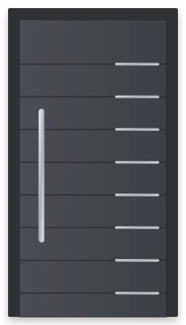
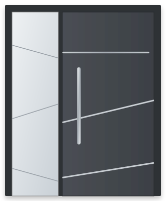
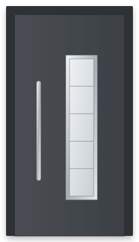
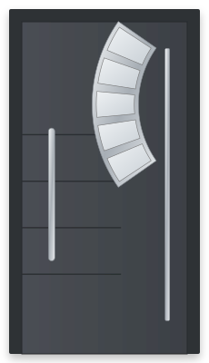
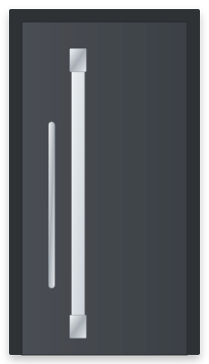
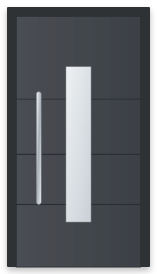
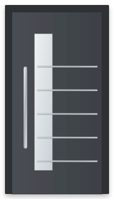
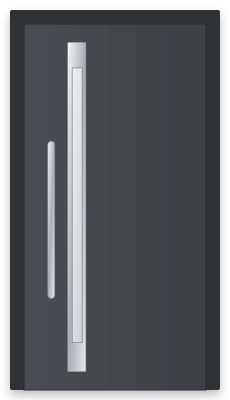
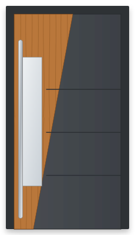
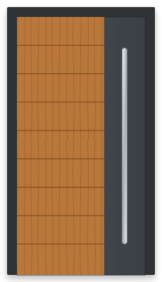
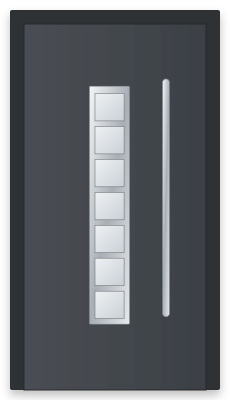
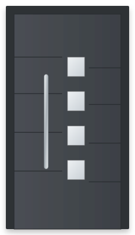
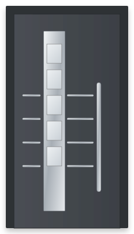
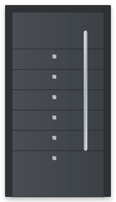
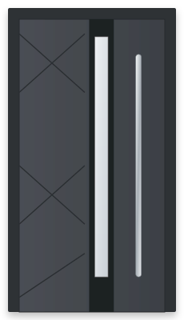
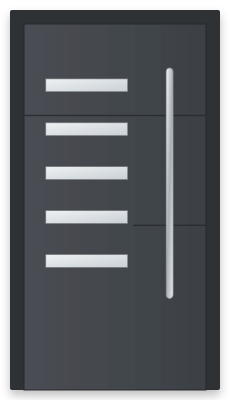
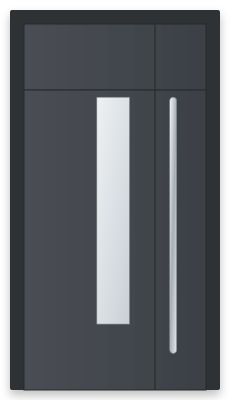
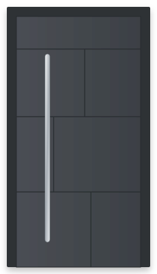
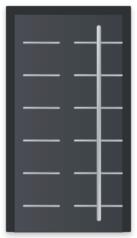
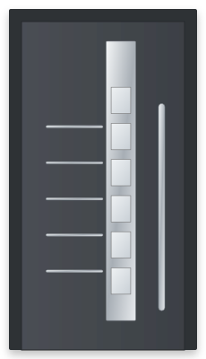
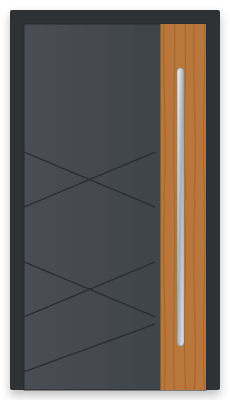
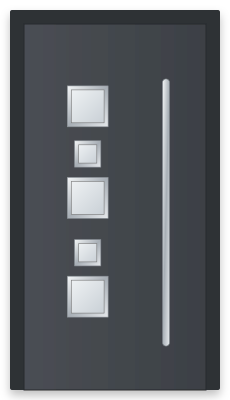
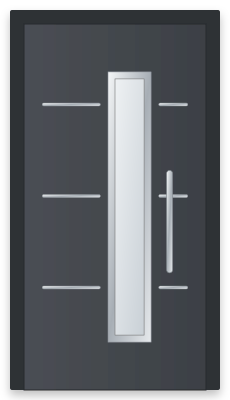
Vrata sa INOX panelima
Paneli sa inox detaljima su otporni na koroziju i dugo zadržavaju izgled.
INOX rukohvati


Garažna vrata
Rolo garažna vrata

Segmentna garažna vrata

Komarnici
- Rolo komarnici
- Plise komarnici
- Fiksni komarnici
Rolo i trakaste zavese
- Rolo zavese
- Trakaste zavese
Profili i boje
Šta da odaberete pre dogovora o merenju
Za prozor razmislite koje krilo treba redovno da se otvara i na koju stranu. Za ulazna vrata birajte između punog panela i modela sa staklom, uz mogućnost bočnog stakla tamo gde ima mesta. Kod sobnih vrata smer otvaranja vredi proveriti u odnosu na raspored nameštaja.
Za balkonski izlaz koji se često koristi pogledajte plise komarnik, a za prozor uporedite rolo i fiksni model prema tome koliko često želite pristup spolja. Ako birate zavesu, rolo pokriva otvor u jednom komadu, dok trakasta omogućava podešavanje ugla traka. Primere ugradnje pogledajte u galeriji radova.